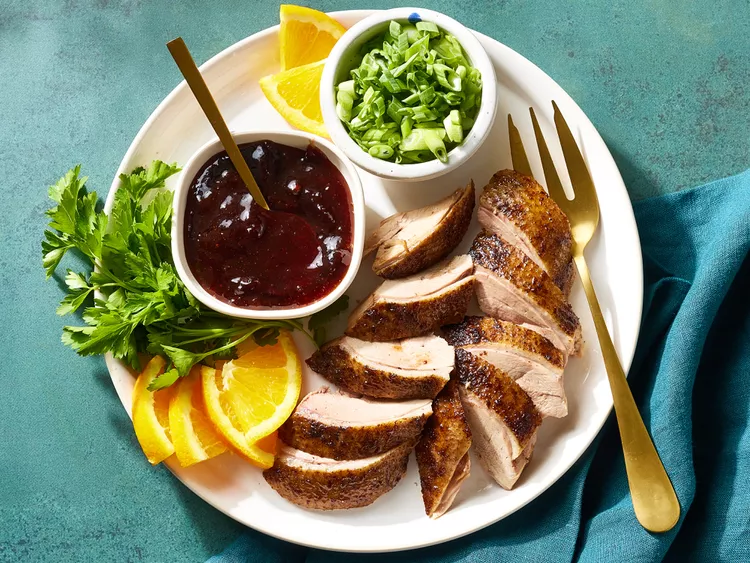

Peking Duck Recipe

Peking Duck
Peking duck is a delicious chinese recipe. It is most known for its crispy skin.
Ingredients
- Whole duck
- 1/2 teaspoon ground cinnamon
- 1/2 tea spoon ground ginger
- 1/4 teaspoon ground nutmeg
- 1/8 teaspoon ground cloves
- 1 tablespoon honey
- 5 green onions
- 1/2 cup plum jam
- 1/4 cup finely chopped chutney
- 1 1/2 teaspoon sugar
- 1 1/2 teaspoon distiled white vinegar
- 1 orange
- 1 tablespoon chopped fresh parsley
Steps
- Prepare the duck.
- Season the duck and stuff with green onions.
- Cover and refrigerate duck for at least 2 hours or up to overnight.
- Steam the duck breast-side up on a rack set in a wok or pot.
- Prick skin all over with a fork, place in a roasting pan, roast for 30 minutes.
- Brush honey and soy sauce over the duck.
- Increase the heat and roast until brown.
- Make the plum sauce.
- Serve the duck with plum sauce, green onions, orange slices, and parsley.